EORA Modern Corporate Enterprise Workspace
Refinement v2.1 resolves the UX risks from the v2 review: responsive topbar, mobile navigation sheet, DataTable density presets, actionable-only badges, terminology for proven loss, and accessibility verified on rendered pages. All pages share one token file, one component stylesheet, one navigation config and one table script.
Mockups

01 · PPIC Control Tower
Decision KPIs, MaterialFlowStrip with kg → pcs boundary, exceptions, due vs supply chart, tabbed detail tables with shared density and pagination.

02 · Production Run Reconciliation
Material and production summaries, three variance indicators, terminology for Actual Material Loss and Physical Stock Discrepancy, case, approval, audit.

03 · Mobile PWA
My Shift, Tasks, Scan, Production reporting, QC inspection, Material confirmation, Inbox, Profile. Bottom navigation with actionable badges.

04 · EoraEnterprisePage list template
View-by tabs, toolbar, schema filter bar (mobile bottom sheet), grouped quantity columns, density presets, sticky columns, row menu, pagination, drawer, states.
Refinement evidence (rendered with Playwright)

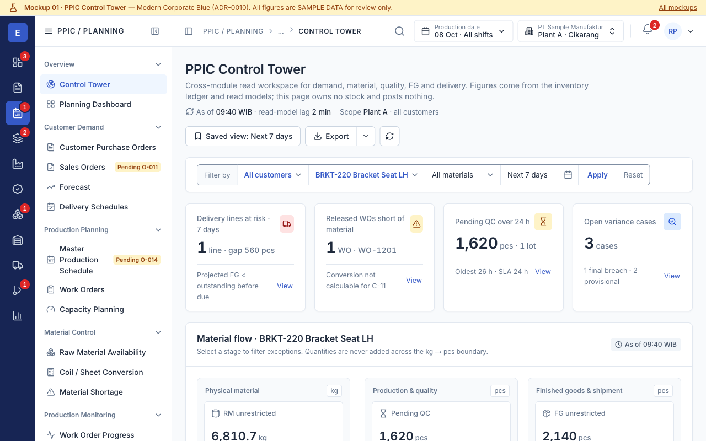

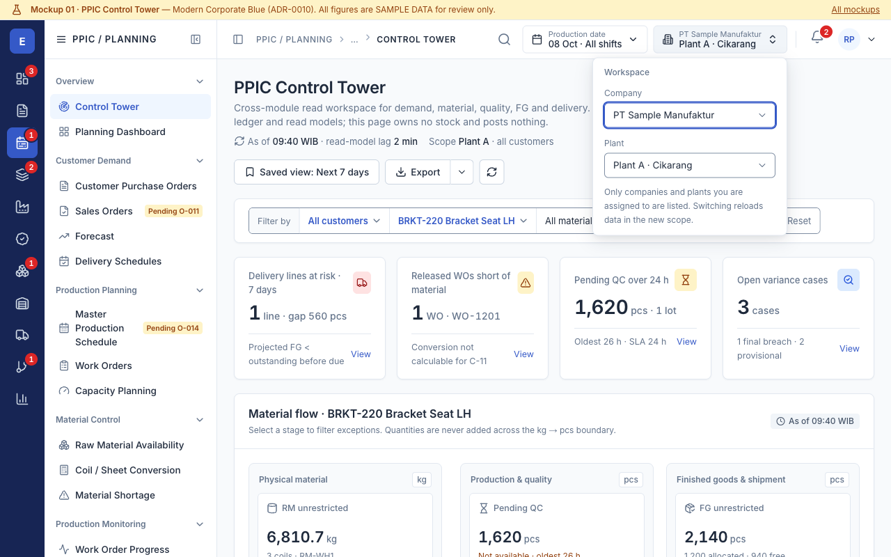

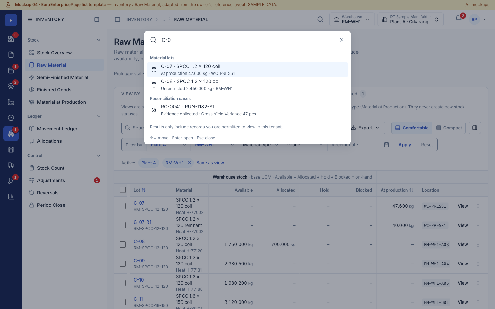

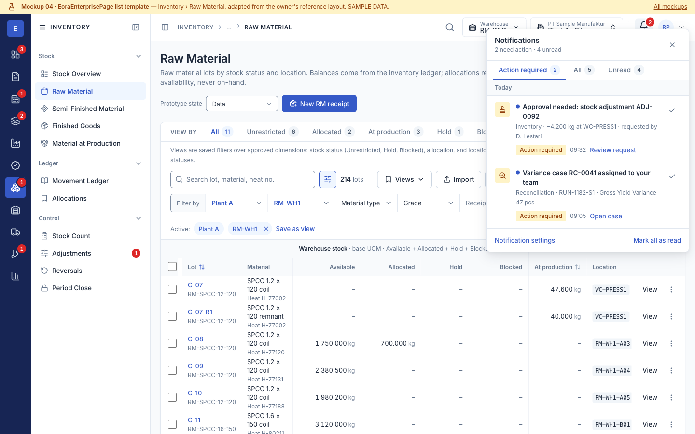

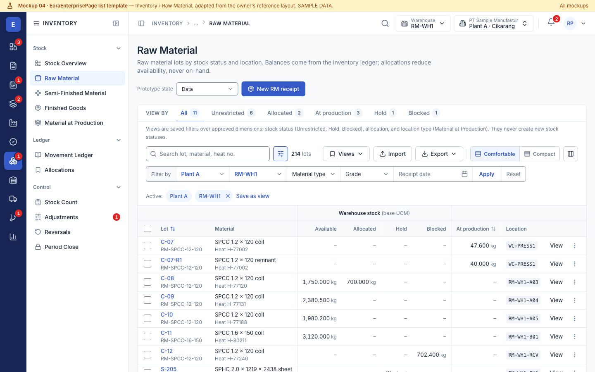

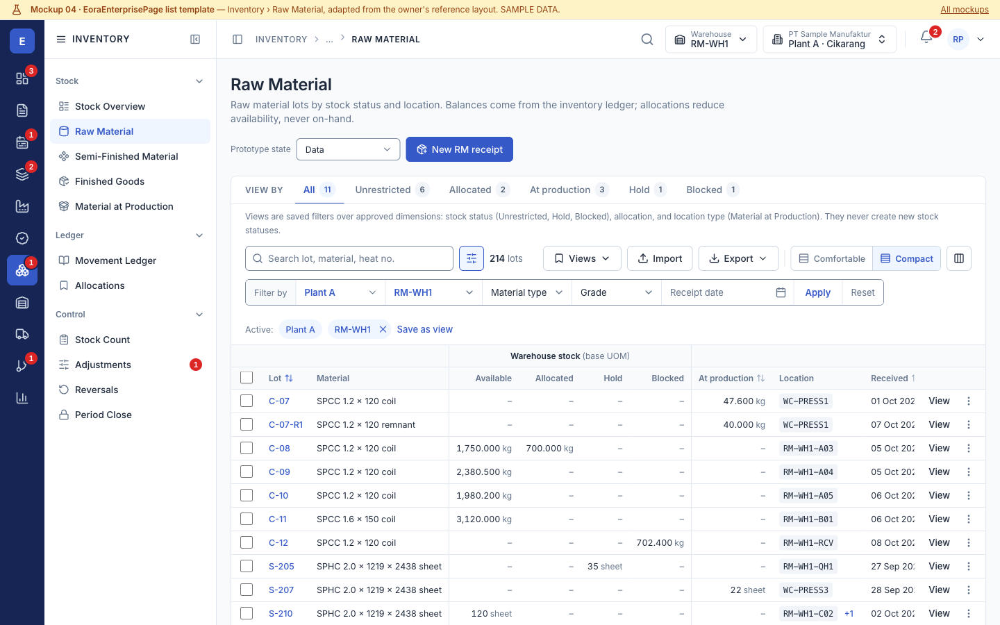

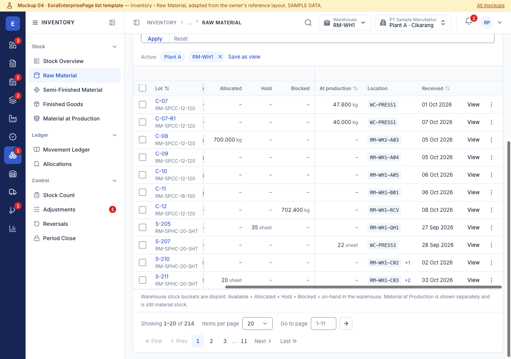

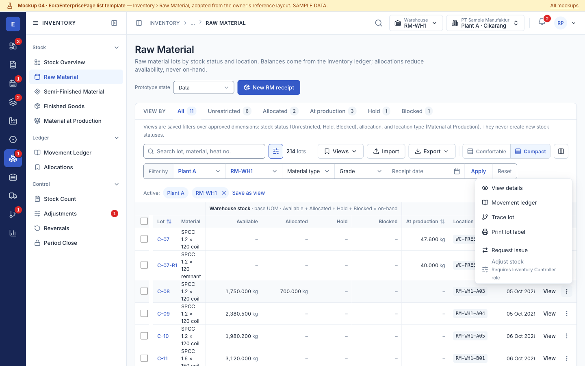

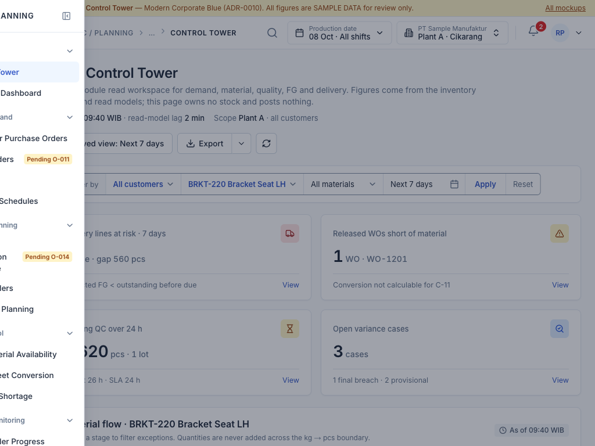

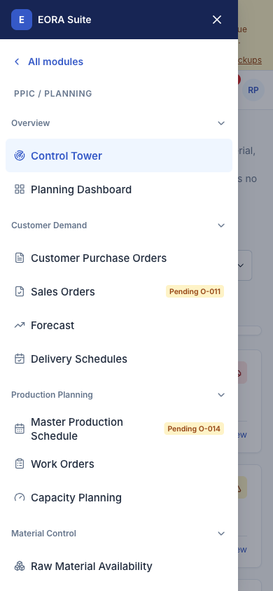

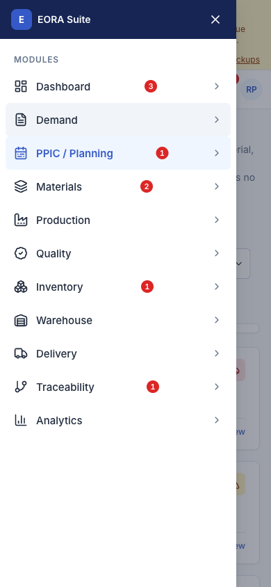

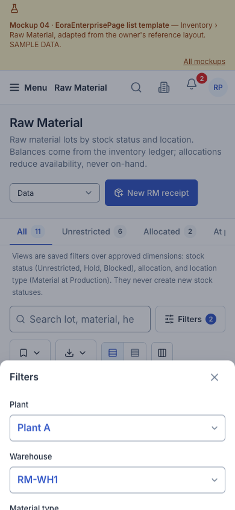

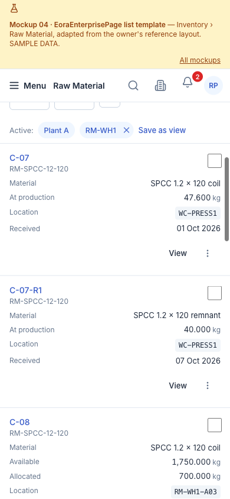

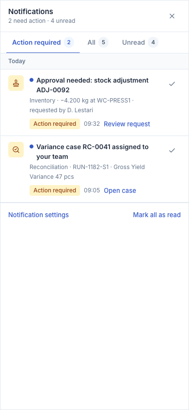

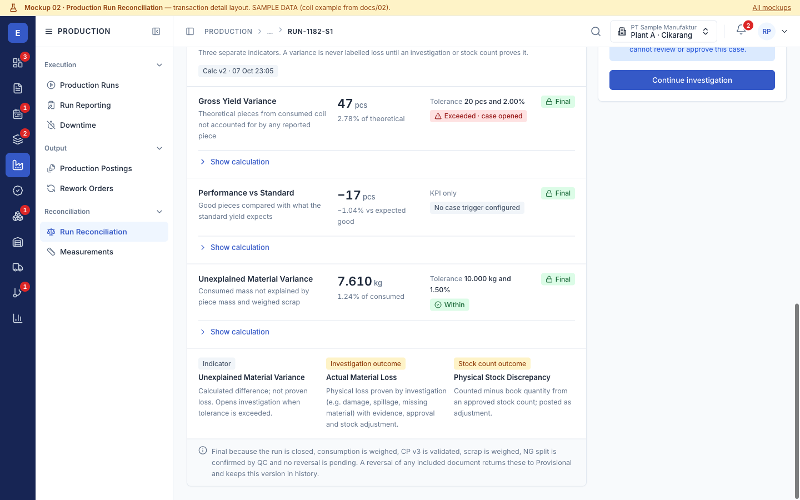
Before vs after
v1 kept for comparison: Superseded “Ledger Ink / Andon Signal”.
| Aspect | v1 (ADR-0009, superseded) | v2 (ADR-0010) | v2.1 refinement (this version) |
|---|---|---|---|
| Topbar | Context selects + theme toggle | Breadcrumb, search, period, company/plant, bell, profile — overflowed at 1280–1440 | Priority rules: search → icon <1600, middle crumbs → “…”, context → icon <1024, overflow menu <768; command search dialog; bell and profile always visible |
| Mobile navigation | None (desktop shrunk) | Both sidebars as sheet, no backdrop | Labelled “Menu” sheet with drill-down, backdrop, close, Esc, focus trap and return, body scroll lock, aria-expanded |
| Badges | — | Record totals and dots | Numeric badges only for actionable items (approvals, QC inspections, variance investigations, tasks, action-required notifications), per role |
| Data table | Hand-written per page | Shared styles; compound cell doubled row height | Shared script: Comfortable 44 px / Compact 34 px, grouped quantity columns, sticky lot and actions, row menu, one pagination, mobile card reflow |
| Filters | None | Segmented bar | Same form becomes a bottom sheet on phones; dependent filter (plant → warehouse); saved views |
| Terminology | “Loss” avoided | Material Variance | Unexplained Material Variance vs Actual Material Loss (proven) vs Physical Stock Discrepancy (stock count) |
| Accessibility | Not verified | Token-level contrast | Rendered-page contrast audit incl. hover, selected, error, notification, mobile nav; focus ring on 30 tab stops; target sizes |